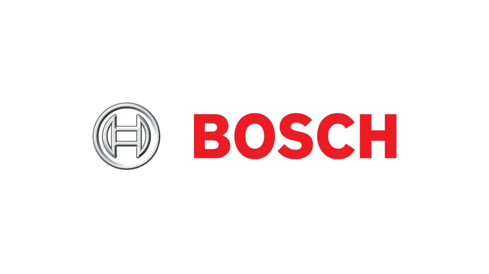

Robert Bosch Recruitment 2022 | Test Engineer
Robert Bosch Recruitment 2022 | Test Engineer | Apply Now!
Robert Bosch has announced a job notification for the post of Junior Data Engineer. A student from various disciplines can apply for Robert Bosch Recruitment 2022. Interested and eligible candidates can read more details below

| Robert Bosch Recruitment 2022 | |||
|---|---|---|---|
| 1 | Company name | Robert Bosch | |
| 2 | Post Name | Junior Data Engineer | |
| 3 | Salary | 7 LPA | |
| 4 | Experience | 0-2 yr | |
| 5 | Job Location | Across India | |
| 6 | Batch | 2022/21/20/19/18/17 | |
Job Description:
Robert Bosch is hiring candidates for the post of Junior Data Engineer
Job Responsibilities:
▪︎ Hands-on experience in writing test scripts and automated testing
▪︎ Should be familiar in C#
▪︎ Good knowledge in OOPs, OOAD.
▪︎ Good debugging skills.
▪︎ collaborate closely with other team members
▪︎ Have good logical and analytical skills
▪︎ Willingness to learn new technologies.
▪︎ Have good interpersonal skills
▪︎ Provide support and documentation
Eligibility Criteria:
▪︎ BE/BTech in computer science or Electronics
Preferred skill:
▪︎ Good spoken and written communication skills: able to deal confidently, tactfully, and appropriately with people of different disciplines and at all levels of the organization.
▪︎ Comfortable working within a large and complex environment with multiple stakeholders and interest groups
▪︎ Collaborate effectively with the rest of the team to achieve common objectives.
About Robert Bosch
Robert Bosch Engineering and Business Solutions Private Limited (RBEI), is a 100% owned subsidiary of Robert Bosch GmbH, one of the worlds leading global suppliers of technology and services, offering end-to-end Engineering, IT, and Business solutions
How to Apply for Robert Bosch Recruitment 2022?
▪︎ Interested and Eligible candidates can apply for this drive online by scrolling down and clicking on Apply HERE.